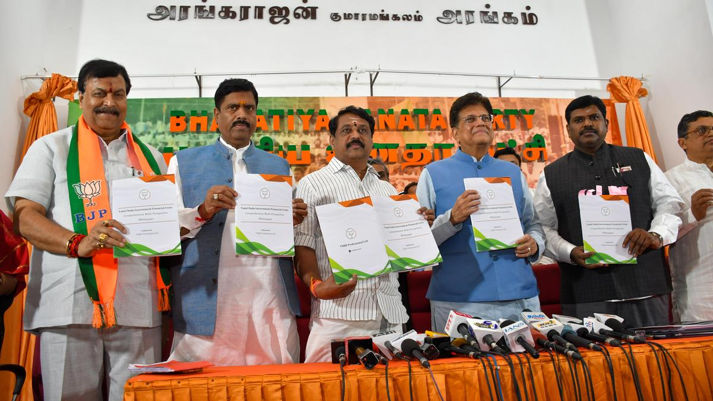
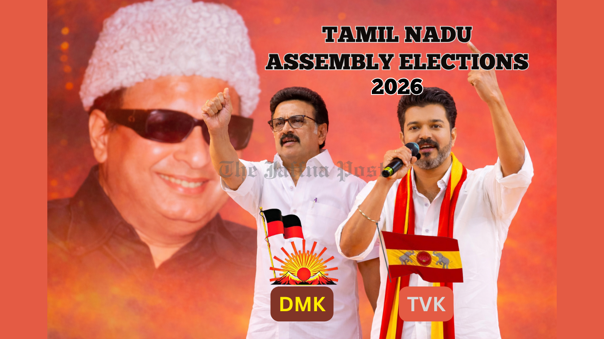

TN Election Result 2026

The Tamil Nadu Assembly Election 2026 created huge excitement across the state.
Political parties conducted public meetings, roadshows, and campaigns in every district.
Millions of people participated in voting and shared their opinions about employment,
education, development, and welfare schemes.
TVK, DMK, and AIADMK became the main focus of this election.
More updates
About Tamil Nadu Election

Tamil Nadu elections are conducted every five years to elect representatives
for the Legislative Assembly. The Election Commission monitors the entire process.
In 2026, first-time voters participated actively and many young people showed
interest in politics and leadership.
Election campaigns focused mainly on:
- Employment opportunities
- Women welfare
- Education
- Infrastructure
- Industrial growth
Popular Leaders

- M. K. Stalin - DMK
- Edappadi K. Palaniswami - AIADMK
- Vijay - TVK
- Annamalai - BJP
- Seeman - NTK
These leaders travelled across Tamil Nadu and addressed thousands of people during campaigns.
Major Political Parties

- DMK
- AIADMK
- TVK
- BJP
- NTK
- PMK
- Congress
- VCK
Each political party released its own election manifesto and development promises.
Campaign Highlights

Election campaigns were conducted through public rallies, social media promotions,
debates, and awareness programs.
Leaders promised:
- Better transport facilities
- Free educational support
- Employment for youth
- Farmer welfare schemes
- New industries and investments
Election Results

According to the latest reports, TVK emerged as one of the strongest parties
in the Tamil Nadu Assembly Election 2026.
DMK and AIADMK also secured major support in several districts across the state.
No party crossed the majority mark completely, leading to alliance discussions
after the election results.